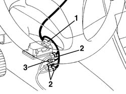

5580C82 airbag system wiring bundle - r r or replace with facia removed
- Path
- Procedures > 55 ELECTRICAL EQUIPMENT > 5580 SPECIAL ACCESSORIES > 5580C air bag system > 5580C82 airbag system wiring bundle - r r or replace with facia removed
- Kind
- repair procedure (removal / refitting; the operation number is the code)
- Applies to
- all engines; all production periods
- Interactive page
- https://sloeber94.github.io/elrnDB-a156/en/#/3238536
Applies to: all engines; all production periods
Applies to: all engines; all production periods
 Removing
Removing
 Refitting
Refitting1. Disconnect the Air Bag control unit connection.
2. Disconnect the pretensioner wiring connections.
3. Disconnect the earth ring.

Applies to: all engines; all production periods
Disconnect the connection to the facia wiring.
Release the wiring from the retaining collars and remove it.
Applies to: all engines; all production periods
Refitting
RemovingCheck that the wiring is undamaged and that the individual conductors are firmly attached to the connections.
Check that the connections are fitted with anti-slip devices (secondary lock).
If necessary, check the continuity.
Refit the wiring and connect the electrical connections.
After refitting, check the operation of the Air Bag system using the Examiner or another tester.